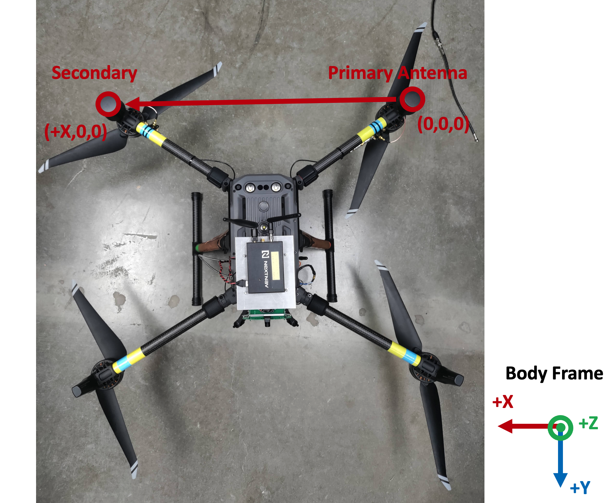

Precise Positioning Engine (ppengine)¶
This page describes how to configure, run, and interpret output from ppengine, which is an implementation of GRID, the General Radionavigation Interfusion Device.
Steps to Enable PPengine¶
Determine if your system has (1) or (2) antennas capability. (2) is preferred if possible. Designate one as the primary antenna.
Fix the location of the RadioLion with respect to the antennas.
The following steps will describe how to measure the location of the RadioLion IMU with respect to the primary antenna. The RadioLion IMU is located in the red square in the following picture:
{kind=link}
The measurements needed to enable ppengine are as follows:
In the
a2d.configfile, change theBASELINE_LENGTH_CONSTRAINTto the distance between the primary and secondary antenna. This measurement should be the positive X direction between antennas, measured in meters.In the
ppose.configfile, change theESTIMATOR_TYPEtoPOSE_AND_TWIST_27. Change thePOS_ALT1_ANTENNA_Bto the location of the secondary antenna with respect to the first antenna in the body frame. This is a three coordinate vector (x, y, x), measured in meters. Please be as precise as possible. See the picture below for an example of this calculation on a quadcopter.In the
ppose.configfile, in theIMUBank, there are numerous parameters that need to be filled out:For
IMU_TYPE, set it toIMU_TYPE = CUSTOM2.POS_IMU_Bis the position of the IMU in the body frame. This is a three coordinate vector (x, y, x), measured in meters. Please be as precise as possible. See the picture below for an example of this calculation on a quadcopter.
ORIENTATION_IMU_Bis a quaternion (4 elements) that represents the rotational position of the IMU with respect to the body frame. See the picture below for an example of the IMU frame vs. the body frame.
To start
ACCELEROMETER_BIAS_U = 0 0 0To start
ACCELEROMETER_SCALE_FACTORS_U = 1 1 1To start
GYRO_BIAS_U = 0 0 0To start
GYRO_SCALE_FACTORS_U = 1 1 1
Run the start-up script
stack.py(see the page Operational Modes for more details) for a few minutes to obtain a good pprx and ppengine solution. Make sure ppengine is run with the-s matoption. Collect the output scriptsdiagnostics.logandposeandtwist.mat. Save them in a local folder.Use the following two scripts:
IMU calibrationandpose and twist analysis.In the
onlineImuCalibration.mscript, change the parametersORIENTATION_IMU_B,ACCELEROMETER_SCALE_FACTORS_U,GYRO_SCALE_FACTORS_U, andPOS_IMU_Bto what you have set in the previous few steps. Downloadthis parserand place it in the same folder that you have placed thediagnostics.logfile. Make sure the datadir variable in the matlab script points to where your files are located.The script should output new parameters for
ORIENTATION_IMU_B,ACCELEROMETER_SCALE_FACTORS_U,GYRO_SCALE_FACTORS_U. Take these new values and update theppose.configfile.In the
poseAndTwistAnal.mscript, set the current_accel_bias to the value ofACCELEROMETER_BIAS_U(which for the first time will be 0 0 0) and set the current_gyro_bias to the value ofGYRO_BIAS_U(which for the first time will be 0 0 0). Run the script. The script will output a few different variables, but you will wantbgU_meanandbaU_mean. These are the new values for the biases.Take these values and ADD them to the previous biases. The first time this is run, the current values are (0 0 0) so the new means will just become the new biases, but this will not be the case on subsequenct runs. These new values for
ACCELEROMETER_BIAS_UandGYRO_BIAS_Ushould be placed in theppose.configfile.With the new values from this process, run ppengine again (you can use the same pprx file you’ve already collected) and save the
diagnostics.logandposeandtwist.matfiles once again. Repeat these steps a few times or until the numbers converge and stop changing (about 3-4 times).Once this process is done, go back to
ppose.configfile, change theESTIMATOR_TYPEtoPOSE_AND_TWIST_18. The IMU is calibrated and precise positioning mode is now tuned to your set-up.
{kind=link}
{kind=link}
Editing Options Files¶
ppengine is highly configurable via both command-line options and configuration parameters. Type ppengine --help to see a list of command-line options. These options are specified in a .opt file as seen in the example below:
--input-file ./ppengine_read
--verbose
--realtime
--config-file ./sbrtk.config
--config-file ./a2d.config
--ppose-config-file ./ppose.config
--skip 30
-t -1
-r 10
# For output to a gbx file
# -o ./ppengine.gbx
# For output to a named pipe
-o ./ppengine_write
--binary-only
Editing Configuration Parameters¶
ppengine configuration files are broken into configuration blocks. The start of each block is indicated by a block header, e.g., ESTIMATOR. A ppengine .opt file (i.e. ppengine.opt) has three corresponding configurations files:
ppose.config: See thisexample ppose configuration file.
a2d.config: See thisexample attitude2d configuration file.
sbrtk.config: See thisexample single baseline rtk configuration file.
Each of the three configuration files uses different combinations of blocks. Each block in the .config file contains various configuration parameters. See each block below to view all of its configuration parameter choices and if applicable the choices for each parameter:
For ppose.config the following blocks are used:
PPOSE_ESTIMATOR
BASELINE
IMU
For a2d.config the following blocks are used:
CDGNSS
ESTIMATOR
BASELINE
For sbrtk.config the following blocks are used:
CDGNSS
ESTIMATOR
BASELINE
DIFF_TROPO
How to Run¶
Examining --help Documentation
Running the following command
ppengine --help
will show all the command-line options available for pprx, including a brief description of each.
Running pprx
Suppose ppengine.opt is a properly-formatted ppengine options file as described Editing Options Files. Navigate to the directory where this file is located and type the following command into the terminal window.
ppengine -f ppengine.opt